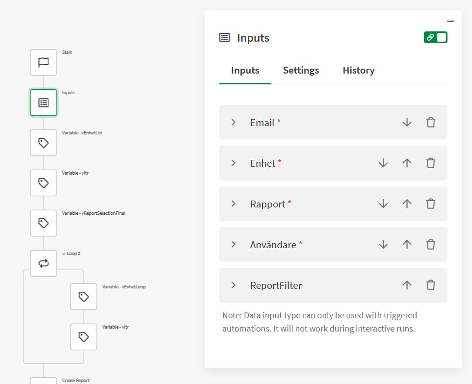
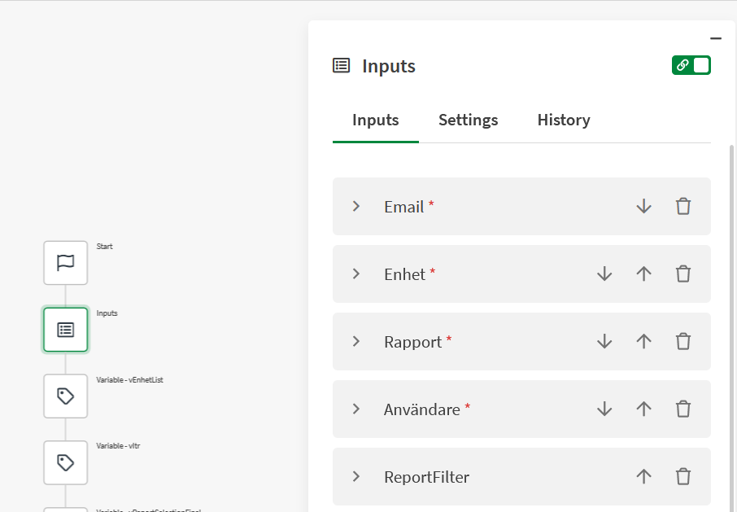
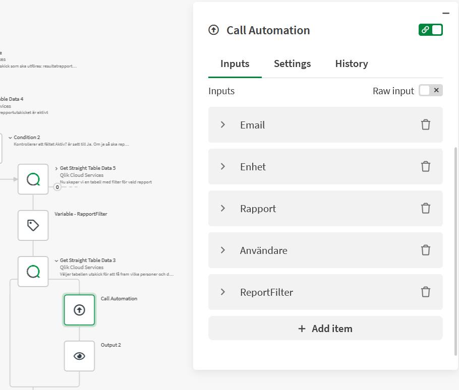

Building reports inside Qlik Automate consumes memory — and when you have many recipients, each with their own filter selections and a multi-page report, a single automation run will eventually hit the memory limit. The run fails mid-way, some recipients never get their report, and the failure is often hard to reproduce because it depends on how much state has accumulated by the time the crash occurs.
The most scalable solution I've found is to split the work across two automations. One handles orchestration — reading the recipient list, resolving filters, deciding who gets what. The other handles report building and sending for a single recipient. The orchestrator calls the report automation once per recipient, passing everything it needs as input.
Why this works
Each call to the report automation is an independent run. It starts clean, builds one report, sends one email, and exits. No memory from the previous recipient carries over. No matter how many pages the report has, or how many recipients are in the list, every report is built in isolation with the full memory budget available to it.
This also makes the automation easier to maintain. The orchestrator is purely data logic — it never touches a report block. The report automation is purely delivery logic — it never touches a recipient list. Each one can be changed, tested, and debugged independently.
Setting up the report automation
The report automation needs to accept input values from the outside rather than reading them itself. To enable this:
- Set the start trigger to Manual (so it can be triggered programmatically)
- Add an Inputs block immediately after Start
- Define one input field for each value the orchestrator will pass

In this example the inputs are: Email, Enhet (the filter value), Rapport (which report to build), Användare (display name for the email), and ReportFilter (an optional additional filter). All required fields are marked with an asterisk; optional ones are not.
Once the Inputs block is in place, every subsequent block in the automation can reference
the input values just like any other variable — { $.inputs.Email },
{ $.inputs.Enhet }, and so on. The rest of the automation is built exactly as
you would build a single-recipient report: apply selections, build the chart, generate the
PDF, send the email.

Calling it from the orchestrator
The orchestrator loops through the recipient list — reading from Excel, a Qlik table, or wherever the config lives — and for each recipient uses a Call Automation block to trigger the report automation.

The Call Automation block exposes exactly the input fields defined in the report automation. Map each one to the corresponding value from the current loop iteration: the recipient's email address, their filter value, the report name, and so on.
The orchestrator waits for each call to complete before moving on to the next recipient. This means the loop is sequential — one report finishes, then the next begins. The important caveat is that if the report automation fails, that error is not surfaced back to the orchestrator. The orchestrator simply continues to the next recipient, unaware that anything went wrong.
Because of this, error handling must live inside the report automation itself. Wrap the report and email logic in error handling blocks within that automation — catch failures, log them, or send an alert from there. Do not rely on the orchestrator to detect or recover from report failures.
The trade-off: automation run quota
Each call to the report automation counts as one automation run against your monthly Qlik Cloud quota. A daily report with 20 recipients uses 20 runs per day — roughly 600 runs per month for that one report alone.
That sounds like a lot, but Qlik has significantly increased the run limits in recent subscription tiers. In practice I have not come close to hitting it with this pattern, even across multiple active reports. If your recipient count is very high or you're on a tighter plan, it's worth checking your current quota before rolling this out at scale.